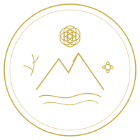
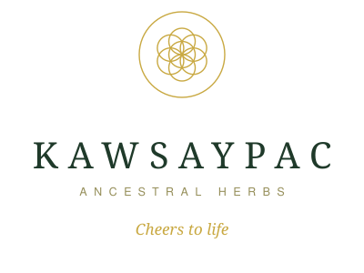
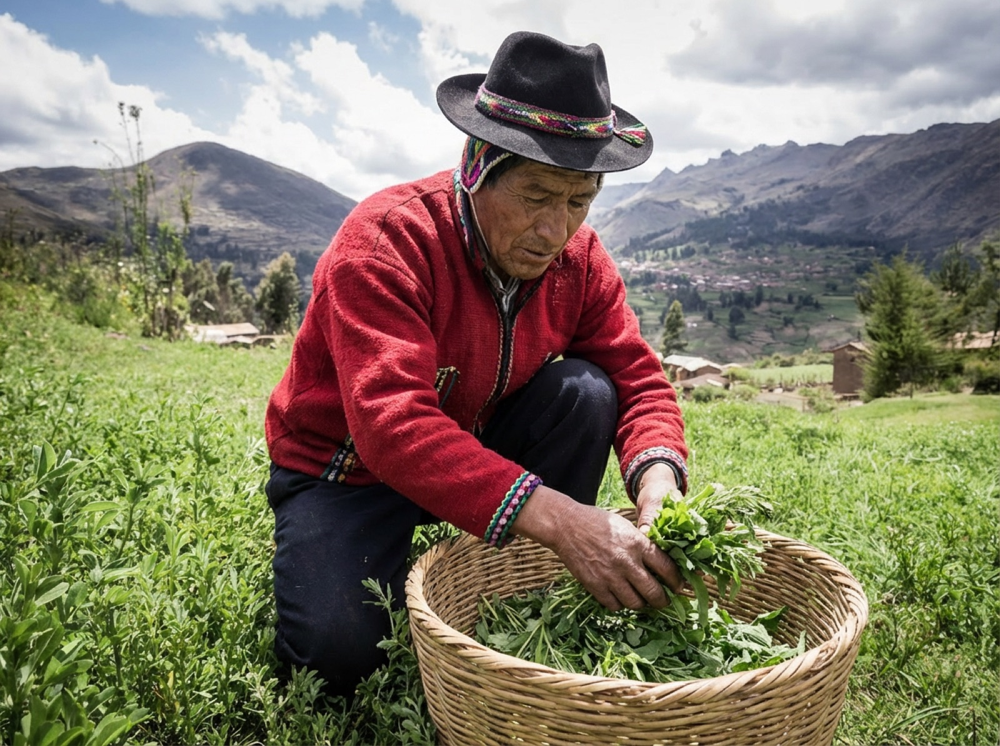
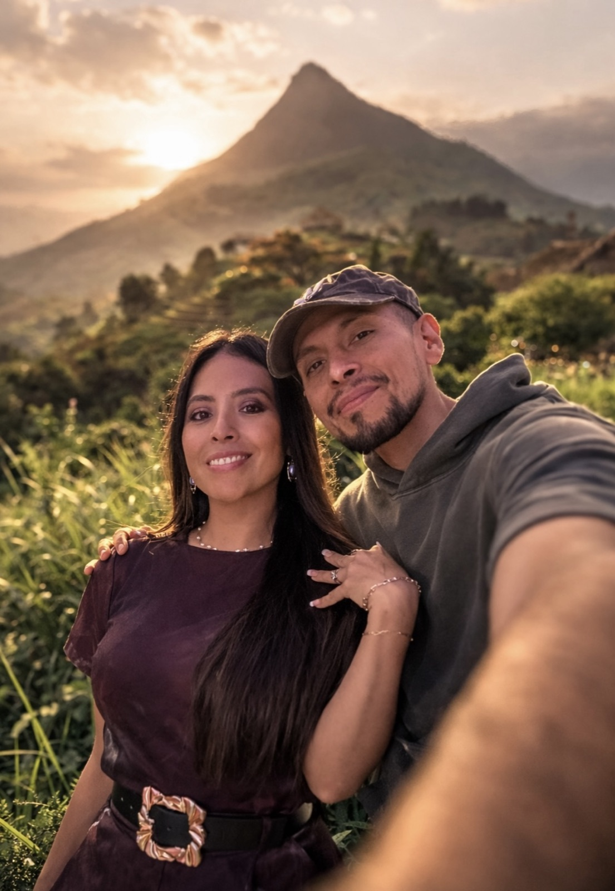
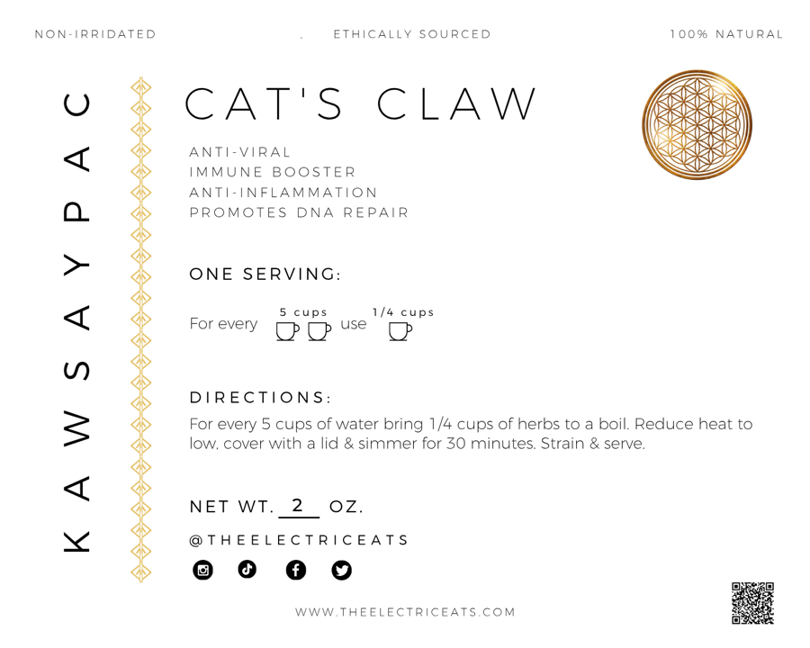
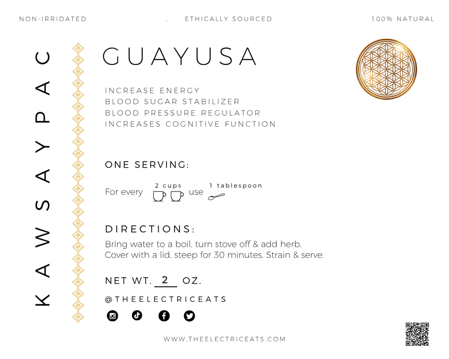
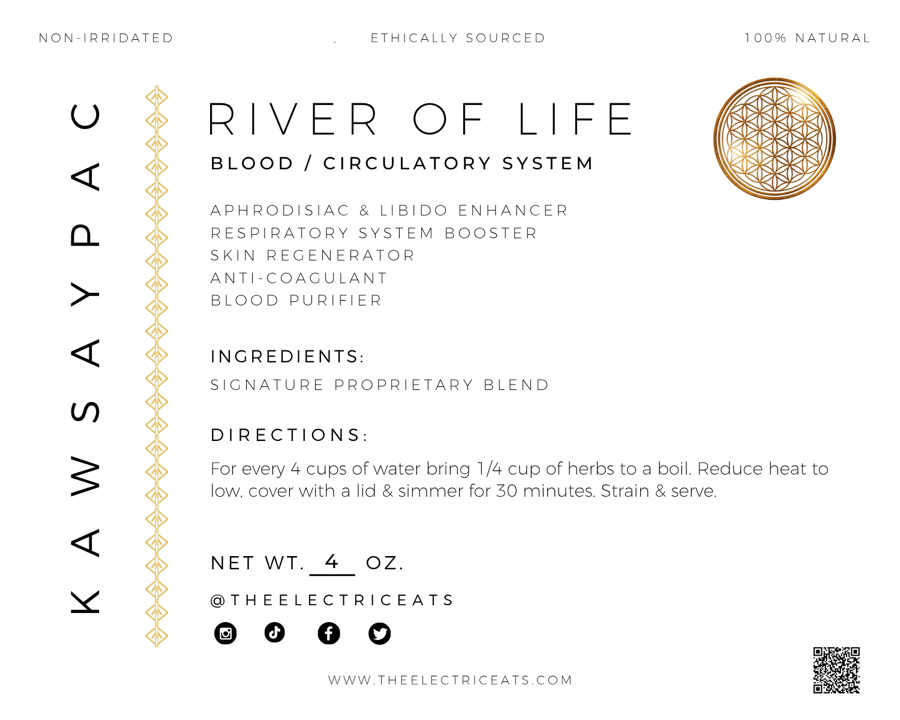
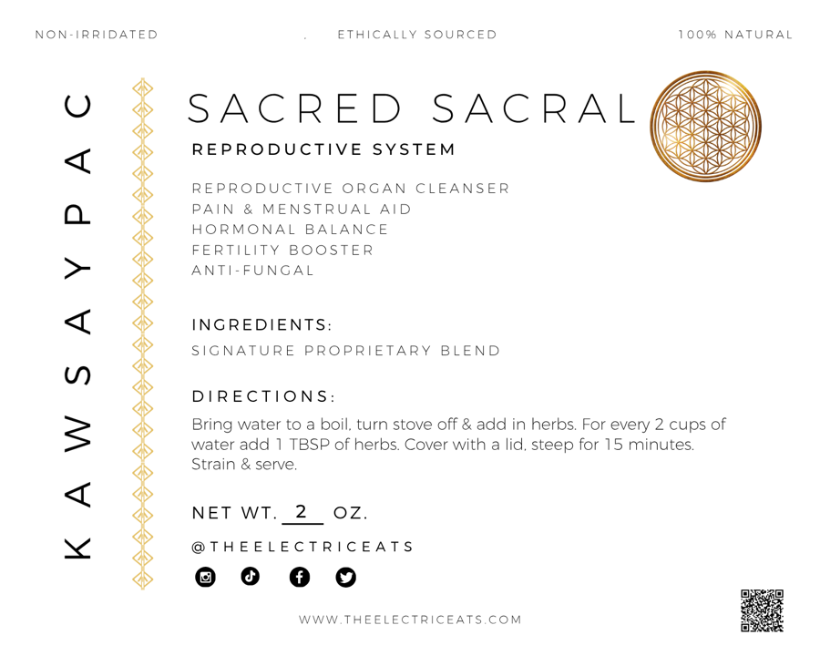
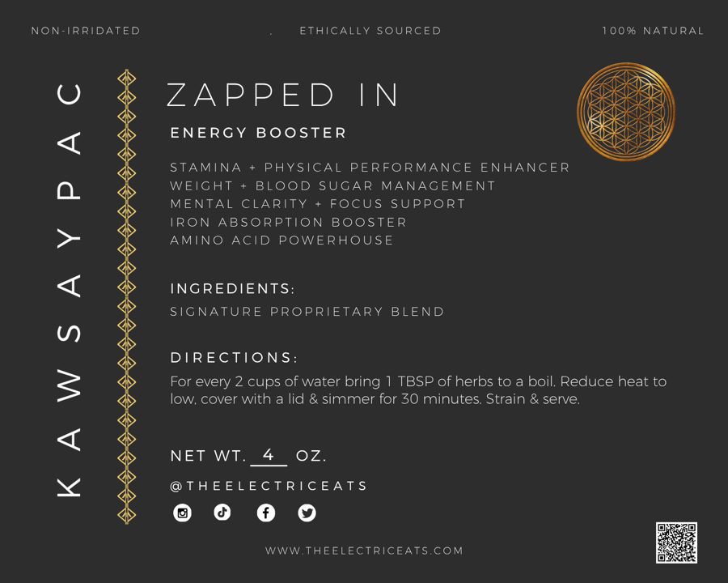
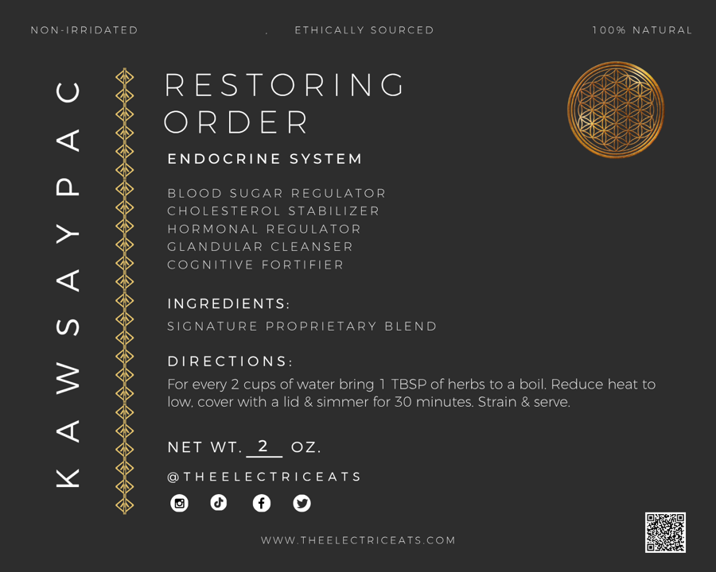

Brand Identity Toolkit · Version 1.0 · 2026
The Kawsaypac identity system.
One living mark, one palette drawn from the land, one editorial voice. Everything a designer, printer, or platform needs to keep Kawsaypac unmistakably Kawsaypac. A house of The Electric Eats.
Logo suite
The Flower of Life is the heart of the mark: every circle touches another, the way soil, plant, hands and body touch in every cup. Fine gold line work keeps it quiet, confident, and never mystical-cheap.

{kind=link}

{kind=link}
{kind=link}

{kind=link}
Do
- Keep clear space equal to one inner circle around every mark
- Use gold or forest line art on cream, cream line art on forest
- Scale the brand mark down to 24px, never smaller
Never
- Stretch, rotate, recolor, or add drop shadows
- Place marks over busy photography without a scrim
- Pair with purple, neon, or gradient fills
The Electric Eats remains the parent house. Its wordmark lives beside Kawsaypac on legal lines, checkout, and the About page, exactly as on the current store.
Color drawn from the land
The canvas stays light. Forest green carries weight, gold is jewelry: if gold ever exceeds five percent of a layout, it stops feeling rare.
Typography with reverence
Headlines · Fraunces
Aa Bb Cc 0123
The forest has always known the way back.
Body & UI · Satoshi
Aa Bb Cc 0123
Wildcrafted herbal blends designed to support digestion, immunity, and whole body vitality.
Accents · Cormorant Italic
Aa Bb Cc 0123
Kawsay means life. Kawsaypac means cheers to life.
Photography, not stock
Every image is yours: the volcano, the cloud forest, the harvest, the hands. Cinematic, atmospheric, natural light, soft shadows, earthy texture, quiet human moments. Nothing staged, nothing plastic.




A voice that remembers
We sound like
- “We believe the land remembers what modern life often asks us to forget.”
- “Healing isn't something we manufacture. It's something we learn to return to.”
- Quietly confident. Curious. Reverent. Refined. Never loud, never salesy.
We never say
- “Unlock your highest vibration.”
- “Our miracle herbs will change your life overnight.”
- Cure claims of any kind. Always “may support”, always the FDA line in the footer.
The system in the wild
Your existing label art already carries the system: botanical illustration, cream paper, disciplined type. The web build extends the same DNA into buttons, cards, and the journey layout.






Interface kit